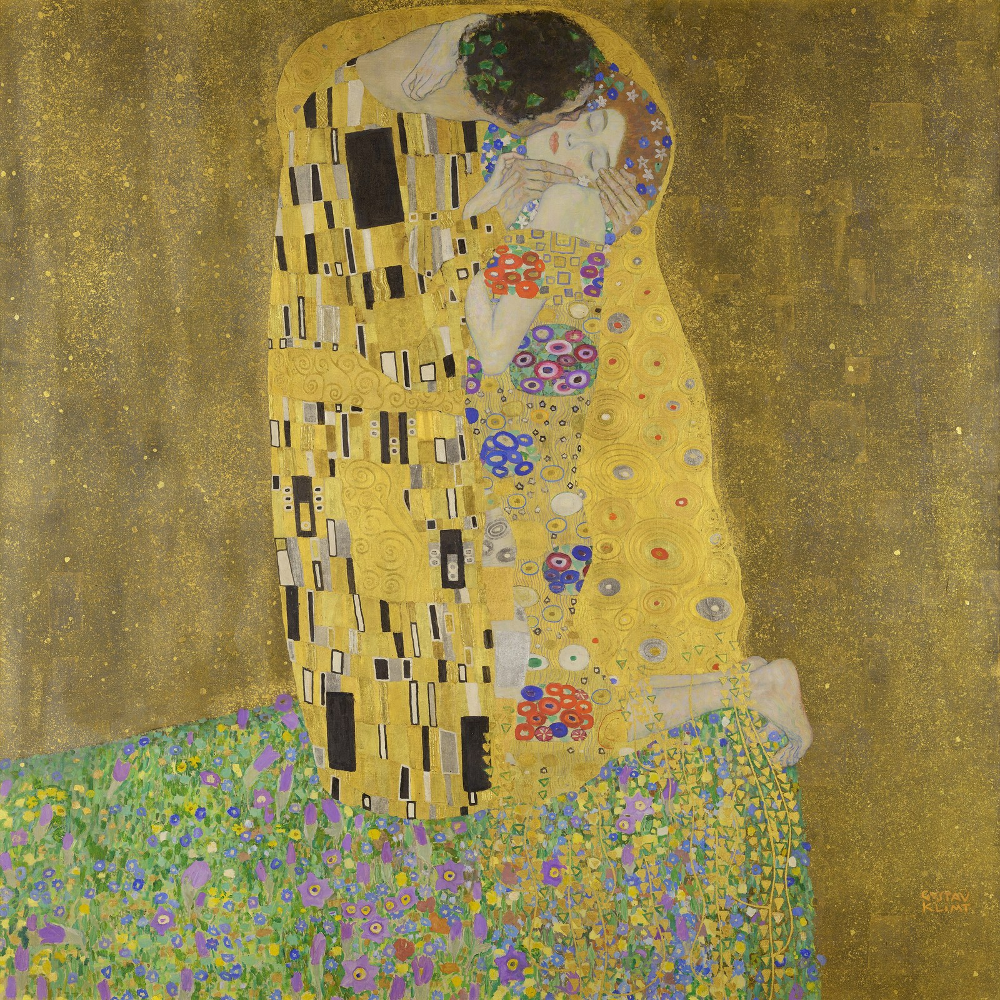

Vienna, 1908 · after Gustav Klimt
What is real. Gustav Klimt was born near Vienna in 1862, the son of a gold engraver. In December 1903 he went to Ravenna and saw the gold mosaics of San Vitale, which a friend who was with him said made an immense impression on him. In the pictures of his golden years he laid real gold and silver leaf on the canvas, and kept ordinary oil paint for the faces and hands: in the Portrait of Adele Bloch-Bauer I (finished 1907, 138 cm square) her hair, face, shoulders and hands are painted in oil and make up less than a twelfth of the picture. The Kiss (180 cm square; oil with gold leaf, silver and platinum) was shown in 1908 under the title Lovers. Its man wears rectangles and its woman rounds and flowers; one historian, Werner Hofmann, read that contrast of square and round patterns as the picture's real subject. Both pictures hung at the Kunstschau, the exhibition Klimt and his friends held from 1 June to 16 November 1908 in a wooden building by Josef Hoffmann with 54 rooms, on the empty plot where the Konzerthaus now stands. The state bought The Kiss there for 25,000 Kronen, before it was finished: Klimt completed it in 1909. It hangs in the Belvedere in Vienna; Adele is in the Neue Galerie in New York.
What you ran past. The Secession was built in 1897–98 by Joseph Maria Olbrich; its dome is a ball of gilded iron leaves that the Viennese called the cabbage head, and its front says “To every age its art, to every art its freedom”. Karlsplatz got its name in 1899, when the river Wien had been roofed over (1894–1900). Otto Wagner's two Stadtbahn pavilions, green iron and white marble with gilded sunflowers, were finished in 1898 and opened in 1899. The market had been moving on to the roofed-over river beside the Secession since 1902. Vienna's trams were electric by then (the last horse tram ran on 26 June 1903) and the Viennese call a tram a Bim. The Musikverein and the Karlskirche stand as they stood.
What has changed. The Konzerthaus (1913) covers the Kunstschau's ground. The pavilions were taken down when the underground was built and put up again two metres higher. The underground entrances and the newer buildings on the square are left out here, and the stone market stalls date only from 1910 onwards. Klimt himself had left the Secession some years before 1908: the sources read here put the split in 1905.
What is not checked. The street names are today's. The tram lines cross where today's rails cross, and the trams wear today's red and white. The gardens follow today's outlines. How the Kunstschau looked outside and how its rooms lay was not found in a source read for this level: the white front, the open roof and the single room are the game's. So are the size of the pictures (they are shown several times larger than life), and the outlines that decide which part of each picture is “his”, “hers” and “flesh”, which were drawn by eye. The coin's silver colour was not checked either.
What is the game's own. The girl and her errand; the wind; every word spoken, Klimt's included; the notion that the pictures were gilded and dressed at the exhibition (they were painted in his studio) and that patterns come in pieces; the cabbages, the waiters' collisions, the runaway hat and the nameless coffee house. Nobody chased gold leaf down Karlsplatz.
Paintings: Gustav Klimt (died 1918), public domain, via Wikimedia Commons (The Kiss: Google Art Project; Adele Bloch-Bauer I: The Yorck Project). Every texture in this level was painted by a script for it; nothing is photographed. Street plan © OpenStreetMap contributors. Sources for every statement, and what could not be checked: research/FINDINGS.md.